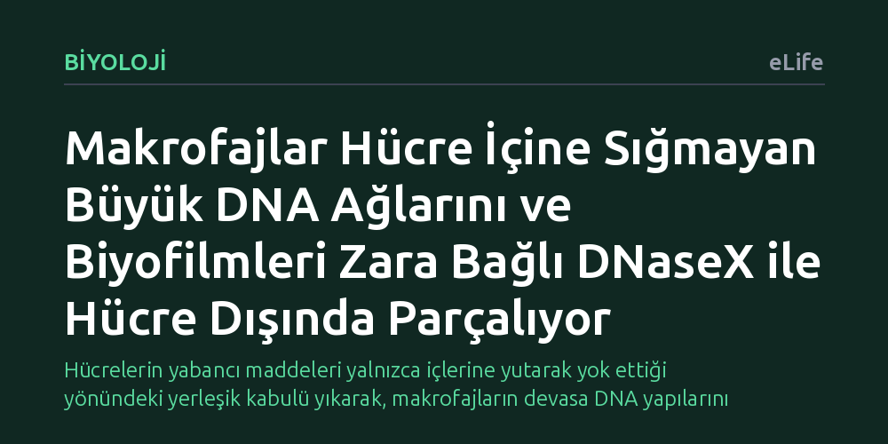

BIYOLOJI · eLife · 2026-10-09
Makrofajların yabancı DNA'ları yalnızca hücre içine yuttuktan sonra mı parçaladığı araştırıldı. Araştırmacılar, zara bağlı DNaseX enziminin fagositoz kadehinde erken devreye girerek hücreye sığmayan bakteriyel biyofilm DNA'larını yutulmadan dışarıda parçaladığını keşfetti.
Hücrelerin yabancı maddeleri yalnızca içlerine yutarak yok ettiği yönündeki yerleşik kabulü yıkarak, makrofajların devasa DNA yapılarını hücre zarı yüzeyinde temasla sindirebildiğini gösteriyor.

Bağışıklık sistemimizin temel devriye hücreleri olan makrofajlar, vücuda giren mikropları ve hücresel atıkları temizlemek için fagositoz adı verilen yönteme başvurur. Uzun yıllardır kabul gören klasik biyoloji anlayışına göre, makrofaj önce hedefi bütünüyle sarıp hücresinin içine alır. Ardından oluşan bu kapalı keseciği sindirim enzimleri içeren lizozomlarla birleştirerek hedefi içeride parçalar. Kısacası, sindirim sürecinin ancak hedefin hücre içine hapsedilip sindirim paketinin olgunlaşmasından sonra başladığı düşünülüyordu.
Fakat doğada bu düzene uymayan büyük engeller vardır. Örneğin kronik enfeksiyonlarda bakteriler, hücre dışı DNA ağlarıyla birbirine tutunarak devasa biyofilmler örer. Bir makrofajın boyutlarını katbekat aşan bu yapışkan ve sert tabakalar, hücre içine sığmayacak kadar büyüktür. Peki makrofajlar kendi hacimlerinden çok daha büyük olan bu genetik barikatlarla karşılaştığında ne yapar? Bilim insanları uzun süredir, yutulamayan bu yapıların hücre yüzeyinde doğrudan parçalanıp parçalanamayacağını araştırıyordu.
Araştırmacılar bu sorunun cevabını bulmak için fagositoz sürecini henüz başlangıç aşamasındayken mercek altına aldı. Bir makrofaj yabancı bir hedefle temas ettiğinde, hücre zarı dışa doğru kıvrılarak hedefi kavramaya çalışan ve "fagositoz kadehi" adı verilen geçici bir fincan yapısı oluşturur. Deneylerde, farklı makrofaj tiplerinde bu kadeh henüz kapanıp hücre içine alınmadan önce DNA parçalayıcı enzim aktivitesi olup olmadığını ölçen özel floresan sensörler kullanıldı.
Gözlemler, kadeh oluştuğu anda yüzeyde çok hızlı ve belirgin bir DNA parçalama faaliyetinin başladığını gösterdi. Üstelik bu durum yalnızca tek bir makrofaj türüne özgü değildi; test edilen farklı makrofaj tiplerinin tamamında fagositoz kadehi kapanmadan hemen önce aynı enzimatik etkinlik kaydedildi. Böylece sindirimin içeriye hapsolmayı beklemediği, temas anında zarda başladığı kanıtlandı.
Hücre zarındaki bu beklenmedik yıkımı hangi aktörün yürüttüğünü araştıran ekip, doğrudan hücre zarına demirli duran DNaseX adlı enzimi tespit etti. Deneyler, fagositoz kadehi inşa edilirken DNaseX enziminin sürekli olarak bu bölgeye sevk edildiğini ortaya koydu. Yani hücre, yutma kadehini oluştururken aynı anda sindirici silahını da zarın dış yüzeyine yerleştiriyordu.
Çalışmanın bir diğer önemli bulgusu ise hücre iskeletini oluşturan F-aktin liflerinin bu süreçteki rolü oldu. F-aktin liflerinin polimerizasyonu ile kadehteki enzim aktivitesi arasında doğrudan bir paralellik saptandı. Hücre iskeleti, zardaki DNaseX enzimini katı DNA kütlelerine doğru mekanik olarak iterek enzimin hedefle fiziksel temasını güçlendiriyordu.
Bu mekanizmanın işlevsel gücünü sınamak için makrofajlar bakteriyel biyofilmlerle karşı karşıya getirildi. Biyofilmleri ayakta tutan en kritik yapı iskelesi, bakterilerin salgıladığı hücre dışı DNA ağlarıdır. Deneyler, makrofajların bu kütleleri içine yutmasına gerek kalmadan, yalnızca doğrudan fiziksel temas kurarak dışarıdaki DNA yapılarını başarıyla temizlediğini gösterdi.
Bu bulgu, makrofajların sadece yutabildikleri küçük parçacıkları değil, yutamayacakları kadar büyük biyolojik kütleleri de yüzeyden parçalayabildiklerini ortaya koyuyor. Özellikle antibiyotiklerin nüfuz edemediği dirençli biyofilm enfeksiyonları ve dokularda biriken serbest DNA kaynaklı iltihaplı hastalıklar düşünüldüğünde, bağışıklık hücrelerinin bu temasla sindirim yeteneği yeni tedavi stratejilerine ışık tutabilir.